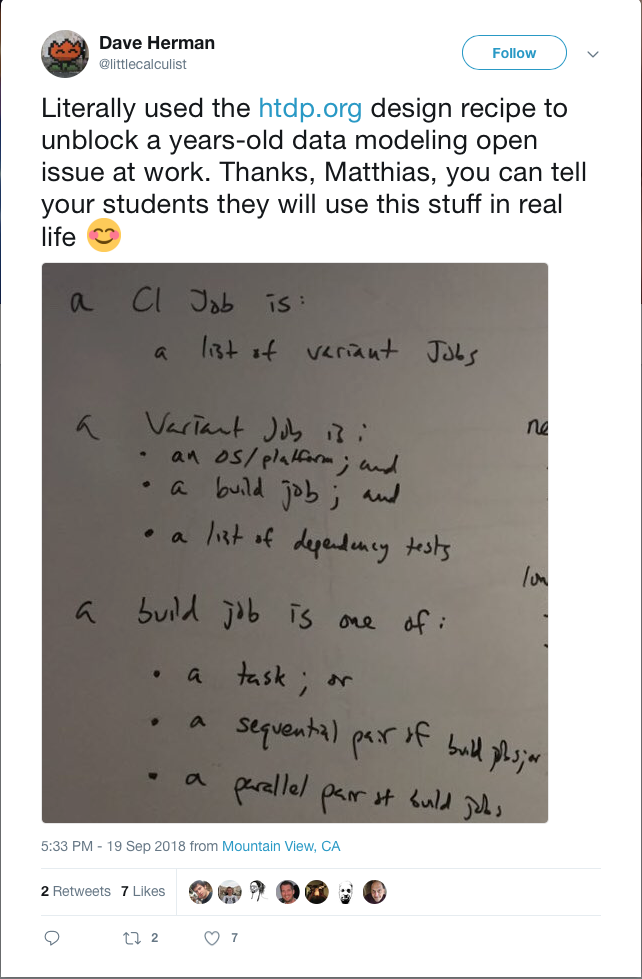

Software Development

I expect students to visit this page once per 24 hours starting with the first day of the semester.

Announcements
Wed Nov 28 18:09:05 EST 2018
On Friday you must sign up in class for a slot for your final code walk. The final code walks will take place in WVH 166 and 168 on Thursday, 6 Dec.; Friday, 7 Dec.; and Monday, 10 Dec.
Tue Nov 27 09:07:00 EST 2018
News Flash Our customer has agreed to a 48 hour
extension. 13 —
Our team will also need to discuss how to interpret the print instructions for the tournament manager.
Sun Nov 25 17:25:44 EST 2018
| |
+--+ Santorini |
| | |
| ... |
| |
+--+ 1/ |
| |
. |
. |
| |
+--+ 12off/ |
| |
+--+ 13 |
| | |
| +--+ client-tests |
| | | |
| | +-- 1-in.json |
| | +-- 1-out.json |
| | |
| +-- server-tests |
| | | |
| | +-- 1-in.json |
| | |
| +-- xserver |
| +-- xclients |
{ |
"min players" : 3, |
"port" : 55556, |
"waiting for" : 5, |
"repeat" : 0 |
} |
{ |
"players" : [["good", "foobar", ...], |
["infinite", "barfoo", ...], |
["infinite", "barfus", ...]], |
"observers" : [], |
"ip" : "127.0.0.1", |
"port" : 55556 |
} |
The file client-tests/1-out.json must specify the Results of
running a best-of-3 tournament of the first player against the second and
the third and the second against the third—
$ ./xserver < server-tests/1-in.json | diff - client-tests/1-out.json & |
$ ./xclients < client-tests/1-in.json |
Thu Nov 1 21:43:56 EDT 2018
We will collect the lab books in both sections tomorrow.
To make sure we get a full collection, we expect everybody to attend.
Sat Oct 27 18:58:43 EDT 2018
For all those of you who wish to become strong software developers, you may wish to scan Famous developers reveal the programming languages they’re glad they learned. One thing to notice is that "teenage heart-break languages" are not part of the chosen languages. Another one is that Norvig refers to modern Lisps, and you may wish to Google what he has said about Racket and HtDP. Finally, my own favorite answer is Marissa Mayer’s, but I will say I wouldn’t have recognized her as developer, only as a person whose name shows up on the business pages of newspapers.
Sat Oct 20 21:15:36 EDT 2018
You may wish to read up on the Windows development process (and weep).
And now to something different but somehow related: the gas explosion in Lawrence and why it happened and why it matters to future software engineers.
Fri Oct 5 18:03:39 EDT 2018
In case you didn’t see it yet, the results of test fests are available via the Projects, Specifics tab.
Fri Sep 21 17:56:41 EDT 2018
On the nature of this course and the remaining weeks
We have wrapped up the "warm up" part of the course, meaning the nature of the work and the workload will change dramatically.
explore your language—
you were asked to choose your favorite language because you should not feel that an instructor’s choice of language restricts you in any way. With this choice comes the obligation to explore the basic capabilities of your language: command line arguments, creating an "executable", standard input/output, TCP input/output, JSON (which is also your choice of data language) processing, and a few more small tidbits. Doing so is stressy. It is stressy because no course teaches such material and you have not had to do this kind of independent work before. It is stressy because we can’t support all the languages that you chose, meaning we cannot help anybody with language-specific hints. It is stressy because you need to cope with the consequences of your own choice.
By now, you probably have a reasonable idea of what went wrong and what went well and how to improve what you have seen. So this form of stress will rapidly disappear.
designs small components—
you were asked to design small components, stepping a little bit beyond what the three prerequisite courses drilled over and over again. Designing an interface really is a "large scale" version of the first three steps of the design recipe. Implementing an interface is learning to follow the last three steps, again in a new context. It is stressy to apply understanding in a context where nobody reminds you all the time about what you learned. It is stressy because you have to think hard how the lessons of the design process apply to your circumstance—
even if the application turns out to be extremely direct.
you will get weekly assignments that will consist of two tasks: specify a component and implement my specification for another one, including an external test harness (standard input/output, JSON processing).
you will systematically scale up your understanding of the design process from Fundamentals I, II, and III to a reasonably large program and you will need to apply the idea of the design process in the context of your favorite language.
My experience with teaching a course like this suggests that you may end up
spending as little as five+ hours on the implementation tasks or as much as
forty+ hours. Non-systematic work is a large reason of why
current software engineering practice often means working extremely long
hours. Conversely a lot of the "process" related ideas (agile, TDD, etc)
are attempts to inject some system with the goal of reducing the hours.
The key to reducing the number of hours is to proceed as systematically as
possible. This may sound counter-intuitive because many of you think that
this means performing more work than a "hacking something together"
approach—
I hope this message will help you put work for Sw Dev into perspective.
Fri Sep 21 08:37:13 EDT 2018
Your test results and code-inspection grades for Week 3 Test Results are available.
Wed Sep 19 21:12:53 EDT 2018
For your amusement, a tweet from a former student.
{kind=link}

(Dave is the former research CTO of Mozilla, a heavyweight behind the JavaScript standardization efforts and the mentor of the Rust project.)
Tue Sep 18 22:58:37 EDT 2018
Due to a miscommunication, we pushed the wrong protocol file into your repos’
directories named 4. Assignment 4 (4 —
[For those who wish to know, I violated the "single point of control" policy and the two copies diverged. See "How to Design Programs" if "single point of control does not ring bells; part III in the second edition (p. 389).]
Mon Sep 17 13:00:13 EDT 2018
Thursday Sep 20, 10:30am
Thursday Sep 20, 11:345m
Sun Sep 16 14:01:90 EDT 2018
Your language/IDE memos are graded. I applied a simplistic grading scale. You
could lose one point per each of the following criteria: file name (place), file
format, margins, font size, TO, FROM, memo format, spellos, grammos,
and content. For the last one, I used an extremely loose standard (organization,
false statements, or completely unsupported claims) and losing points was
rare. I did not reduce your score for stylistic faux pas.—
I wrote a memo, too, and I urge you to scan it. The margin notes explain the organization and make a couple of sw dev points.
Sat Sep 15 19:30:34 EDT 2018
I have revised 3 —
Wed Sep 12 19:45:19 EDT 2018
Systems informed me that their Linux image now comes with GHC Haskell v7.6.3, Rust v1.28, and Python v3.6.3 (python36). The old versions of Python are also available. They could not add Python v3.7 because CentOS (System’s choice of Linux) is not supported yet.
Tue Sep 11 22:02:43 EDT 2018
1. 2 —
2. A rectangular arrangement is a form of information. As Fundamentals I taught you (and Fundamentals II and OOD), you must pick a data representation from the data sub-language of your chosen language to get information like this into your language. And you must allow for ways to hand over such data to get build a "large" spreadsheet representation easily.
Mon Sep 10 17:41:12 EDT 2018
README—
The "16pt baseline" requirement refers to the line spacing. Yes, this intentionally leaves little space for writing. Concise writing is good writing. Only (some) high school teachers reward you for writing a lot.
Wed Sep 5 09:12:57 EDT 2018
There will be no recitations until further notice.
Wed Aug 8 13:56:08 EDT 2018
Please reflect on all the programming languages you have experienced in the past and with which you would like to implement a serious project. Then pick your currently favorite language and make sure it is installed on your laptop. Bring a letter-size sheet with the name of your chosen language to the first lecture. Fold the sheet and place it front of you on the table in the classroom so that the instructor can see it.
Sun Apr 8 16:21:26 EDT 2018
Preliminary Web Site
This web site is preliminary. It is set up to assist people with choosing the section of Software Development that they wish to enroll in. Please read the Abstract to get an idea of how I run this course.